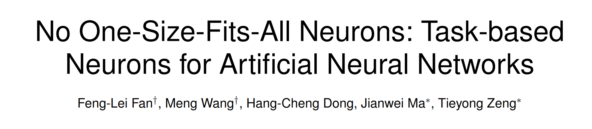

No One-Size-Fits-All Neurons
Important
This is a important admonition. second important paragraph.
Installation
This page provides a brief introduction to graph matching and some guidelines for using pygmtools. If you are seeking some background information, this is the right place!
Note
This is a note admonition. This is the second line of the first paragraph.
The note contains all indented body elements following.
It includes this bullet list.